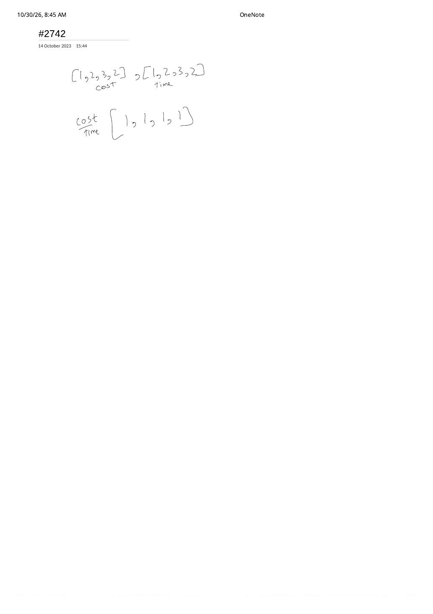

Dynamic Programming Classics: AM-GM Integer Break, Non-Empty Dot Product, Wall Knapsack & Bounded Walks
Expanded from handwritten competitive coding study notes (04_343.pdf, 05_1458.pdf, 08_2742.pdf, 09_1269.pdf) · View original handwritten pages
1. LC 343: Integer Break — AM-GM Proof & Remainder-Mod-3 Rule
Given an integer $N \ge 2$ ($N \le 58$), break $N$ into the sum of $k \ge 2$ positive integers $a_1 + a_2 + \dots + a_k = N$ to maximize their product $\prod_{i=1}^{k} a_i$.
Following the Handwritten AM-GM & Log-Derivative Proof (04_343.pdf)
Pages 1 and 2 of 04_343.pdf derive the structure from scratch instead of taking the "split into 3s" trick on faith:
- Equal parts win for fixed $k$ (AM-GM Inequality): Maximizing $\sum_{i=1}^{k} \ln a_i$ subject to $\sum a_i = N$ sets equal partial derivatives $\frac{1}{a_1} = \dots = \frac{1}{a_k}$, or directly via AM-GM:
$$\frac{a_1 + a_2 + \dots + a_k}{k} = \frac{N}{k} \ge \sqrt[k]{a_1 a_2 \cdots a_k} \implies \prod_{i=1}^{k} a_i \le \left(\frac{N}{k}\right)^k$$
- What continuous part size $x = N / k$ maximizes $x^{N/x}$? Differentiating $\frac{N}{x}\ln x$ gives $\frac{N}{x^2}(1 - \ln x) = 0 \implies x = e \approx 2.71828$. Among integers, $3$ is closest to $e$ ($\frac{\ln 3}{3} \approx 0.3662 \gt \frac{\ln 2}{2} \approx 0.3466$—matching the handwritten comparison $8 \log 3 \gt 12 \log 2$ for $3^8 = 6561 \gt 2^{12} = 4096$ on sum $24$, and $3 + 3 + 2 \implies 18 \gt 2^4 = 16$ on $N = 8$!).
- Remainder modulo 3 for $N \ge 4$ (after handling mandatory $k \ge 2$ base cases $N = 2 \implies 1 \times 1 = 1$ and $N = 3 \implies 2 \times 1 = 2$):
- $N \equiv 0 \pmod 3$: All $3$s $\implies 3^{N/3}$.
- $N \equiv 2 \pmod 3$: Keep the trailing $2$ $\implies 3^{\lfloor N/3 \rfloor} \times 2$ (e.g., $N = 8 = 3 + 3 + 2 \implies 18$).
- $N \equiv 1 \pmod 3$: Never multiply by $1$! Borrow one $3$ so $3 + 1 = 4 \longrightarrow 2 \times 2 = 4 \gt 3 \times 1$ $\implies 3^{\lfloor N/3 \rfloor - 1} \times 4$ (e.g., $N = 10 = 3 + 3 + 4 \implies 36$).
// LC 343: Integer Break — Both O(1)/O(log N) Math and O(N^2) DP
class Solution {
public:
int integerBreak(int n) {
if (n == 2) return 1; // Must split into at least k = 2 parts: 1 + 1
if (n == 3) return 2; // 2 + 1
int q = n / 3, r = n % 3;
if (r == 0) return (int)pow(3, q);
if (r == 1) return (int)pow(3, q - 1) * 4; // Replace 3 * 1 with 2 * 2 = 4
return (int)pow(3, q) * 2; // r == 2
}
int integerBreakDP(int n) {
vector<int> dp(n + 1, 0);
dp[1] = 1;
for (int i = 2; i <= n; ++i) {
for (int j = 1; j < i; ++j) {
// Either stop splitting (i - j) or keep splitting via dp[i - j]
dp[i] = max(dp[i], j * max(i - j, dp[i - j]));
}
}
return dp[n];
}
};2. LC 1458: Max Dot Product of Two Subsequences — Fixing the Non-Empty Trap
Given two integer arrays nums1 (length $m$) and nums2 (length $n$), return the maximum dot product between non-empty subsequences of nums1 and nums2 of equal length.
The Page 1 $\to$ Page 2 Self-Correction on [-1, -1] vs. [1, 1]
Look closely at how 05_1458.pdf evolves across its two pages:
- On Page 1, we write the natural take / skip choices at $(i, j)$:
- Take pair $(i, j)$: $\text{nums1}[i] \cdot \text{nums2}[j] + f(i + 1, j + 1)$
- Skip one side: $\max(f(i + 1, j),\, f(i, j + 1))$
if i >= m or j >= n: return 0. - At the bottom of Page 1 & top of Page 2, tracing
nums1 = [-1, -1]andnums2 = [1, 1]exposes the bug! Every pair product is $-1 \lt 0$. If out-of-bounds returns0, theNot takebranch walks all the way to $(2, 0)$ and returns0(the empty subsequence!) instead of the required non-empty answer-1!
Two Essential Adjustments for Non-Empty Subsequence DP (Page 2's -10^6 Fix)
- Out-of-bounds base case must be $-\infty$ (e.g.,
-1e9): Reaching $i = m$ or $j = n$ without having taken a pair is invalid, soskippaths that pick nothing evaluate to $-\infty$ and lose to-1. - When taking $(i, j)$, continuation is optional: Write
nums1[i] * nums2[j] + max(0, f(i + 1, j + 1))! Whymax(0, ...)here? Because once we have selected $(i, j)$, the non-empty constraint is already satisfied—if the suffix $f(i + 1, j + 1)$ is negative, we are free to stop after $(i, j)$!
// LC 1458: Max Dot Product of Two Subsequences — O(m * n) Time, O(n) Space
class Solution {
public:
int maxDotProduct(vector<int>& nums1, vector<int>& nums2) {
int m = nums1.size(), n = nums2.size();
const int NEG_INF = -1e9;
vector<int> nextRow(n + 1, NEG_INF), curRow(n + 1, NEG_INF);
for (int i = m - 1; i >= 0; --i) {
fill(curRow.begin(), curRow.end(), NEG_INF);
for (int j = n - 1; j >= 0; --j) {
int prod = nums1[i] * nums2[j];
int take = prod + max(0, nextRow[j + 1]); // Pair (i,j) satisfies non-empty!
int skip = max(nextRow[j], curRow[j + 1]);
curRow[j] = max(take, skip);
}
swap(nextRow, curRow);
}
return nextRow[0];
}
};3. LC 2742: Painting the Walls — Why Greedy Fails & 0/1 Knapsack Wins
Given $n \le 500$ walls with arrays cost[i] and time[i]: the paid painter paints wall $i$ in time[i] units of time for cost[i] money, while the free painter paints any single wall in $1$ unit of time for $0$ money—but can only work while the paid painter is busy. Find the minimum cost to paint all $n$ walls.
From the Handwritten Ratio Test (08_2742.pdf) to $1 + \text{time}[i]$ Capacity
In 08_2742.pdf, checking cost = [1, 2, 3, 2], time = [1, 2, 3, 2] shows cost / time = [1, 1, 1, 1]—every wall has the exact same unit rate, yet some subsets overshoot $n$ walls and waste money while cost = 2, time = 2 + cost = 1, time = 1 covers $(1 + 2) + (1 + 1) = 5 \ge 4$ walls for cost $3$!
Exact 0/1 Knapsack Reduction
Suppose we assign a subset $S \subseteq \{0, \dots, n - 1\}$ of walls to the paid painter. Total busy time of the paid painter is $\sum_{i \in S} \text{time}[i]$, during which the free painter can finish up to $\sum_{i \in S} \text{time}[i]$ remaining walls for free! All $n$ walls get painted iff:
Every wall $i$ is a 0/1 item with coverage weight $w_i = 1 + \text{time}[i]$ and price $c_i = \text{cost}[i]$! Clamping accumulated coverage at $n$ (min(n, j + 1 + time[i])) gives an $\mathcal{O}(n^2)$-time, $\mathcal{O}(n)$-space 1D Knapsack:
// LC 2742: Painting the Walls — 1D Min-Cost 0/1 Knapsack (O(n^2) Time, O(n) Space)
class Solution {
public:
int paintWalls(vector<int>& cost, vector<int>& time) {
int n = cost.size();
const int INF = 1e9 + 7;
vector<int> dp(n + 1, INF); // dp[w] = min cost to cover >= w walls
dp[0] = 0;
for (int i = 0; i < n; ++i) {
int cover = 1 + time[i]; // 1 paid wall + time[i] free walls
for (int w = n; w > 0; --w) {
int prev = max(0, w - cover);
dp[w] = min(dp[w], dp[prev] + cost[i]);
}
}
return dp[n];
}
};4. LC 1269: Number of Ways to Stay in the Same Place After Some Steps
Starting at index 0 of an array of length arrLen ($1 \le \text{arrLen} \le 10^6$), in each of steps ($\le 500$) moves you can step Left (idx - 1), Right (idx + 1), or Stay (idx), never leaving $[0, \text{arrLen} - 1]$. Count the valid trajectories ending back at index 0 modulo $10^9 + 7$.
steps = 2, arrLen = 4 from 09_1269.pdf: Only leaves reaching idx == 0 when steps_left == 0 contribute 1 (namely Stay → Stay and Right → Left).Crucial State-Space Pruning: Why arrLen = 10^6 Doesn't TLE
Allocating a DP table of size $\text{steps} \times \text{arrLen} = 500 \times 10^6$ would require $5 \times 10^8$ states and exceed both time and memory limits! As noted in 09_1269.pdf ("only add the steps taken if they reach back"), any trajectory that wanders past index $\lfloor \text{steps} / 2 \rfloor$ can never walk back to index $0$ before running out of steps! Clamping maxPos = min(arrLen - 1, steps / 2) bounds the active array width to $\le 251$ cells:
// LC 1269: Number of Ways to Stay in the Same Place — Pruned 1D Rolling DP
class Solution {
public:
int numWays(int steps, int arrLen) {
const int MOD = 1e9 + 7;
int maxPos = min(arrLen - 1, steps / 2); // Cannot go past steps/2 and return to 0!
vector<long long> dp(maxPos + 1, 0), nextDp(maxPos + 1, 0);
dp[0] = 1;
for (int s = 1; s <= steps; ++s) {
int limit = min(maxPos, steps - s); // Even tighter: must be <= remaining steps!
fill(nextDp.begin(), nextDp.begin() + limit + 1, 0);
for (int pos = 0; pos <= limit; ++pos) {
long long ways = dp[pos]; // Stay
if (pos > 0) ways += dp[pos - 1]; // Came from Left
if (pos < maxPos) ways += dp[pos + 1]; // Came from Right
nextDp[pos] = ways % MOD;
}
swap(dp, nextDp);
}
return (int)dp[0];
}
};From the Handwritten Notes
Expand all six original handwritten pages below to inspect the exact AM-GM derivation, negative dot-product tree trace, wall ratio test, and 2-step recursion tree:
View original note — 04_343.pdf (Page 1: Log-sum derivative & AM-GM inequality setup)

04_343.pdf Page 1: Testing $N = 10 \to 3 \times 3 \times 4 = 36$, $N = 25$, $\sum \log(a_i)$ derivatives, and $\frac{N}{k} \ge \sqrt[k]{abc}$ AM-GM bound.View original note — 04_343.pdf (Page 2: Powers of N/k & remainder-mod-3 check on N = 8)

04_343.pdf Page 2: Comparing $(N/2)^2$ vs. $(N/3)^3$ and checking $N = 8$: $3 + 3 + 2 \to 18$ vs. $2 + 2 + 2 + 2 \to 16$.View original note — 05_1458.pdf (Page 1: Take/skip recurrence & [-1, -1] vs [1, 1] edge-case setup)

05_1458.pdf Page 1: Formulating take vs. don't-take transitions and setting up the all-negative product test case [-1, -1], [1, 1].View original note — 05_1458.pdf (Page 2: Full recursion tree with -10^6 boundary base cases)

05_1458.pdf Page 2: Tracing why out-of-bounds states must return $-10^6$ ($-\infty$) instead of $0$ so empty subsequences are rejected.View original note — 08_2742.pdf (Cost/time ratio test on [1, 2, 3, 2])


08_2742.pdf: Testing cost / time = [1, 1, 1, 1] on [1, 2, 3, 2], motivating the 0/1 Knapsack coverage formulation.View original note — 09_1269.pdf (Left/Right/Stay return condition & f(0, 2) recursion tree)

09_1269.pdf: Number-line transitions and complete 3-way recursion tree for steps = 2, arrLen = 4 summing to 2.